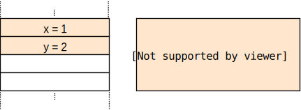
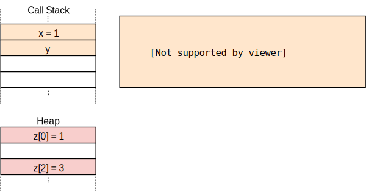
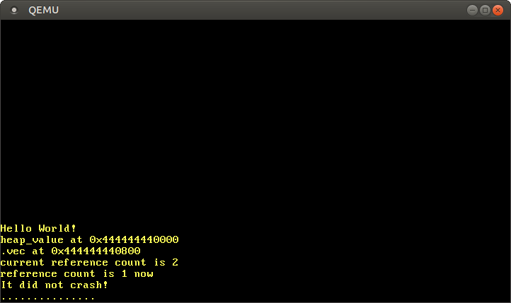

ヒープ割り当て
この記事は翻訳されたものです： この記事はHeap Allocationをコミュニティの手により翻訳したものです。そのため、翻訳が完全・最新でなかったり、原文にない誤りを含んでいる可能性があります。問題があればこのissue上で報告してください！
翻訳者： @woodyZootopia 及び @garasubo.
この記事では、私たちのカーネルにヒープ割り当ての機能を追加します。まず動的メモリの基礎を説明し、どのようにして借用チェッカがありがちなアロケーションエラーを防いでくれるのかを示します。その後Rustの基本的なアロケーションインターフェースを実装し、ヒープメモリ領域を作成し、アロケータクレートを設定します。この記事を終える頃には、Rustに組み込みのallocクレートのすべてのアロケーション・コレクション型が私たちのカーネルで利用可能になっているでしょう。
このブログの内容は GitHub 上で公開・開発されています。何か問題や質問などがあれば issue をたててください (訳注: リンクは原文(英語)のものになります)。またこちらにコメントを残すこともできます。この記事の完全なソースコードはpost-10 ブランチにあります。
目次
🔗局所変数と静的変数
私たちのカーネルでは現在二種類の変数が使用されています：局所変数とstatic変数です。局所変数はコールスタックに格納されており、変数の定義された関数がリターンするまでの間のみ有効です。静的変数はメモリ上の固定された場所に格納されており、プログラムのライフタイム全体で常に生存しています。
🔗局所変数
局所変数はコールスタックに格納されています。これはプッシュ (push) とポップ (pop) という命令をサポートするスタックというデータ構造です。関数に入るたびに、パラメータ、リターンアドレス、呼び出された関数の局所変数がコンパイラによってプッシュされます：

上の例は、outer関数がinner関数を呼び出した後のコールスタックを示しています。コールスタックはouterの局所変数を先に持っていることが分かります。innerを呼び出すと、パラメータ1とこの関数のリターンアドレスがプッシュされます。そこで制御はinnerへと移り、innerは自身の局所変数をプッシュします。
inner関数がリターンすると、コールスタックのこの関数に対応する部分がポップされ、outerの局所変数のみが残ります：

inner関数の局所変数はリターンまでしか生存していないことが分かります。Rustコンパイラはこの生存期間を強制し、私たちが値を長く使いすぎてしまうとエラーを投げます。例えば、局所変数への参照を返そうとしたときがそうです：
fn inner(i: usize) -> &'static u32 {
let z = [1, 2, 3];
&z[i]
}
上の例の場合、参照を返すことには意味がありませんが、変数に関数よりも長く生存して欲しいというケースは存在します。すでに私たちのカーネルでそのようなケースに遭遇しています。それは割り込み記述子表 (IDT) を読み込もうとしたときで、ライフタイムを延ばすためにstatic変数を使う必要がありました。
🔗静的変数
静的変数は、スタックとは別の固定されたメモリ位置に格納されます。このメモリ位置はコンパイル時にリンカによって指定され、実行可能ファイルにエンコードされています。静的変数はプログラムの実行中ずっと生存するため、'staticライフタイムを持っており、局所変数によっていつでも参照することができます。
![同じouter/innerの例ですが、innerがstatic Z: [u32; 3] = [1,2,3];を持っており、参照&Z[i]を返します](call-stack-static.svg)
上の例でinner関数がリターンするとき、それに対応するコールスタックは破棄されます。（しかし）静的変数は絶対に破棄されない別のメモリ領域にあるため、参照&Z[1]はリターン後も有効です。
'staticライフタイムの他にも静的変数には利点があります。それらは位置がコンパイル時に分かるため、アクセスするために参照が必要ないのです。この特性を私たちのprintlnマクロを作る際に利用しました：静的なWriterをその内部で使うことで、マクロを呼び出す際に&mut Writer参照が必要でなくなります。これは他の変数にアクセスできない例外処理関数においてとても有用です。
しかし、静的変数のこの特性には重大な欠点がついてきます：デフォルトでは読み込み専用なのです。Rustがこのルールを強制するのは、例えば二つのスレッドがある静的変数を同時に変更した場合データ競合が発生するためです。静的変数を変更する唯一の方法は、それをMutex型にカプセル化し、あらゆる時刻において&mut参照が一つしか存在しないことを保証することです。MutexはVGAバッファへの静的なWriterを作ったときにすでに使いました。
🔗動的メモリ
局所変数と静的変数を組み合わせれば、それら自体とても強力であり、ほとんどのユースケースを満足します。しかし、どちらにも制限が存在することも見てきました：
- 局所変数はそれを定義する関数やブロックが終わるまでしか生存しません。なぜなら、これらはコールスタックに存在し、関数がリターンした段階で破棄されるからです。
- 静的変数はプログラムの実行中常に生存するため、必要なくなったときでもメモリを取り戻したり再利用したりする方法がありません。また、所有権のセマンティクスが不明瞭であり、すべての関数からアクセスできてしまうため、変更しようと思ったときには
Mutexで保護してやらないといけません。
局所変数・静的変数の制約としてもう一つ、固定サイズであることが挙げられます。従ってこれらは要素が追加されたときに動的に大きくなるコレクションを格納することができません（Rustにおいて動的サイズの局所変数を可能にするunsized rvaluesの提案が行われていますが、これはいくつかの特定のケースでしかうまく動きません）。
これらの欠点を回避するために、プログラミング言語はしばしば、変数を格納するための第三の領域であるヒープをサポートします。ヒープは、allocateとdeallocateという二つの関数を通じて、実行時の動的メモリ割り当てをサポートします。仕組みとしては以下のようになります：allocate関数は、変数を格納するのに使える、指定されたサイズの解放されたメモリの塊を返します。変数への参照を引数にdeallocate関数を呼び出すことによってその変数を解放するまで、この変数は生存します。
例を使って見てみましょう：
ここでinner関数はzを格納するために静的変数ではなくヒープメモリを使っています。まず要求されたサイズのメモリブロックを割り当て、*mut u32の生ポインタを受け取ります。その後でptr::writeメソッドを使ってこれに配列[1,2,3]を書き込みます。最後のステップとして、offset関数を使ってi番目の要素へのポインタを計算しそれを返します（簡単のため、必要なキャストやunsafeブロックをいくつか省略しました）。
割り当てられたメモリはdeallocateの呼び出しによって明示的に解放されるまで生存します。したがって、返されたポインタは、innerがリターンしコールスタックの対応する部分が破棄された後も有効です。スタティックメモリと比較したときのヒープメモリの長所は、解放（outer内のdeallocate呼び出しでまさにこれを行っています）後に再利用できるということです。この呼び出しの後、状況は以下のようになります。

z[1]スロットが解放され、次のallocate呼び出しで再利用できることが分かります。しかし、z[0]とz[2]は永久にdeallocateされず、したがって永久に解放されないことも分かります。このようなバグはメモリリークと呼ばれており、しばしばプログラムの過剰なメモリ消費を引き起こします（innerをループで何度も呼び出したらどんなことになるか、想像してみてください）。これ自体良くないことに思われるかもしれませんが、動的割り当てはもっと危険性の高いバグを発生させうるのです。
🔗よくあるミス
メモリリークは困りものですが、プログラムを攻撃者に対して脆弱にはしません。しかしこのほかに、より深刻な結果を招く二種類のバグが存在します：
- もし変数に対して
deallocateを呼んだ後にも間違ってそれを使い続けたら、いわゆるuse-after-free脆弱性が発生します。このようなバグは未定義動作を引き起こし、しばしば攻撃者が任意コードを実行するのに利用されます。 - 間違ってある変数を二度解放したら、double-free脆弱性が発生します。これが問題になるのは、最初の
deallocate呼び出しの後に同じ場所にallocateされた別の割り当てを解放してしまうかもしれないからです。従って、これもまたuse-after-free脆弱性につながりかねません。
これらの脆弱性は広く知られているため、回避する方法も解明されているはずだとお思いになるかもしれません。しかし答えはいいえで、このような脆弱性は未だ散見され、例えば最近でも任意コード実行を許すLinuxのuse-after-free脆弱性が存在しました。このことは、最高のプログラマーであっても、複雑なプロジェクトにおいて常に正しく動的メモリを扱えはしないということを示しています。
これらの問題を回避するため、JavaやPythonといった多くの言語ではガベージコレクションという技術を使って自動的に動的メモリを管理しています。発想としては、プログラマが絶対に自分の手でdeallocateを呼び出すことがないようにするというものです。代わりに、プログラムが定期的に一時停止されてスキャンされ、未使用のヒープ変数が見つかったら自動的にdeallocateされるのです。従って、上のような脆弱性は絶対に発生し得ません。欠点としては，定期的にスキャンすることによる性能のオーバーヘッドが発生することと、一時停止の時間が長くなりがちであることが挙げられます。
Rustはこの問題に対して別のアプローチを取ります：所有権と呼ばれる概念を使って、動的メモリの操作の正確性をコンパイル時にチェックするのです。従って前述の脆弱性を回避するためのガベージコレクションの必要がなく、性能のオーバーヘッドが存在しません。このアプローチのもう一つの利点として、CやC++と同様、プログラマが動的メモリの使用に関して精緻な制御を行うことができるということが挙げられます。
🔗Rustにおける割り当て
プログラマーに自分の手でallocateとdeallocateを呼ばせる代わりに、Rustの標準ライブラリはこれらの関数を暗黙の内に呼ぶ抽象型を提供しています。最も重要な型はBoxで、これはヒープに割り当てられた値の抽象化です。これはBox::newコンストラクタ関数を提供しており、これは値を引数として、その値のサイズを引数にallocateを呼び出し、ヒープ上に新しく割り当てられたスロットにその値を移動します。ヒープメモリを解放するために、スコープから出た際にdeallocateを呼ぶようなDropトレイトをBox型は実装しています。
{
let z = Box::new([1,2,3]);
[…]
} // zがスコープから出たので`deallocate`が呼ばれる
このような記法のパターンはリソース取得は初期化である（resource acquisition is initialization、略してRAII）という奇妙な名前を持っています。C++でstd::unique_ptrという同じような抽象型を実装するのに使われたのが始まりです。
このような型自体ではすべてのuse-after-freeバグを防ぐのに十分ではありません。なぜなら、プログラマは、Boxがスコープ外に出て対応するヒープメモリスロットがdeallocateされた後でも参照を利用し続けることができてしまうからです：
let x = {
let z = Box::new([1,2,3]);
&z[1]
}; // zがスコープから出たので`deallocate`が呼ばれる
println!("{}", x);
ここでRustの所有権の出番です。所有権システムは、参照が有効なスコープを表す抽象ライフタイムをそれぞれの参照に指定します。上の例では、参照xは配列zから取られているので、zがスコープ外に出ると無効になります。上の例をplaygroundで実行すると、確かにRustコンパイラがエラーを投げるのが分かります：
error[E0597]: `z[_]` does not live long enough
--> src/main.rs:4:9
|
2 | let x = {
| - borrow later stored here
3 | let z = Box::new([1,2,3]);
4 | &z[1]
| ^^^^^ borrowed value does not live long enough
5 | }; // z goes out of scope and `deallocate` is called
| - `z[_]` dropped here while still borrowed
ここで使われている用語は初見では少しわかりにくいかもしれません。値の参照を取ることは値を借用する (borrow) と呼ばれています。これは現実での借用と似ているためです：オブジェクトに一時的にアクセスできるようになりますが、それをいつか返さなければならず、また破壊することも許されません。オブジェクトが破壊される前にすべての借用が終了することを確かめることにより、Rustコンパイラはuse-after-freeが起こりえないことを保証できるのです。
Rustの所有権システムはさらに突き詰められており、use-after-freeバグを防ぐだけでなく、JavaやPythonのようなガベージコレクション型言語と同じ完全なメモリ安全性を提供しています。さらにスレッド安全性も保証されており、マルチスレッドのプログラムにおいてはこれらの言語よりもさらに安全です。さらに最も重要なことに、これらのチェックは全てコンパイル時に行われるため、C言語で手書きされたメモリ管理と比べても実行時のオーバーヘッドはありません。
🔗使用例
Rustにおける動的メモリ割り当ての基礎を学んだわけですが、これをいつ使えば良いのでしょうか？私たちのカーネルは動的メモリ割り当てなしにこれだけやってこられたのに、どうして今になってこれが必要なのでしょうか？
まず覚えておいて欲しいのは、割り当てを行うたびにヒープから空いているスロットを探してこないといけないので、動的メモリ割り当てには少しだけ性能オーバーヘッドがあるということです。このため、特に性能が重要となるカーネルのプログラムにおいては、一般に局所変数の方が好ましいです。しかし、動的メモリ割り当てが最良の選択肢であるようなケースも存在するのです。
基本的なルールとして、動的メモリは動的なライフタイムや可変サイズを持つような変数に必要とされます。動的なライフタイムを持つ最も重要な型はRcで、これはラップされた値に対する参照を数えておき、すべての参照がスコープから外れたらそれをdeallocateするというものです。可変サイズを持つ型の例には、Vec、String、その他のコレクション型といった、要素が追加されたときに動的に大きくなるような型が挙げられます。これらの型は、容量が一杯になると、より大きい量のメモリを割り当て、すべての要素をコピーし、古い割り当てをdeallocateすることにより対処します。
私たちのカーネルでは主にコレクション型を必要とし、例えば、将来の記事でマルチタスキングを実行するときにアクティブなタスクのリストを格納するために使います。
🔗アロケータインターフェース
ヒープアロケータを実装するための最初のステップは、組み込みのallocクレートへの依存関係を追加することです。coreクレートと同様、これは標準ライブラリのサブセットであり、アロケーション型やコレクション型を含んでいます。allocへの依存関係を追加するために、以下をlib.rsに追加します：
// in src/lib.rs
extern crate alloc;
通常の依存関係と異なりCargo.tomlを修正する必要はありません。その理由は、allocクレートは標準ライブラリの一部としてRustコンパイラに同梱されているため、コンパイラはすでにこのクレートのことを知っているからです。このextern crate宣言を追加することで、コンパイラにこれをインクルードしようと試みるよう指定しています（昔はすべての依存関係がextern crate宣言を必要としていたのですが、いまは任意です）。
訳者注： 詳しくはedition guideの対応するページをご覧ください。
カスタムターゲット向けにコンパイルしようとしているので、Rustインストール時に同梱されていたコンパイル済みのallocを使用することはできません。代わりにcargoにこのクレートをソースから再コンパイルするよう命令する必要があります。これは、配列unstable.build-stdを.cargo/config.tomlファイルに追加することで行えます。
# in .cargo/config.toml
[unstable]
build-std = ["core", "compiler_builtins", "alloc"]
これでコンパイラはallocクレートを再コンパイルして私たちのカーネルにインクルードしてくれます。
allocクレートが#[no_std]なクレートで標準では無効化されている理由は、これが追加の要件を持っているからです。今私たちのプロジェクトをコンパイルしようとすると、その要件をエラーとして目にすることになります：
error: no global memory allocator found but one is required; link to std or add
#[global_allocator] to a static item that implements the GlobalAlloc trait.
（エラー：グローバルメモリアロケータが見つかりませんが、一つ必要です。
stdをリンクするか、GlobalAllocトレイトを実装する静的な要素に#[global_allocator]を付けてください。）
error: `#[alloc_error_handler]` function required, but not found
（エラー：`#[alloc_error_handler]`関数が必要ですが、見つかりません）
最初のエラーは、allocクレートが、ヒープアロケータというallocateとdeallocate関数を提供するオブジェクトを必要とするために発生します。Rustにおいては、ヒープアロケータ（の満たすべき性質）はGlobalAllocトレイトによって記述されており、エラーメッセージでもそのことについて触れられています。クレートのヒープアロケータを設定するためには、#[global_allocator]属性をGlobalAllocトレイトを実装する何らかのstatic変数に適用する必要があります。
二つ目のエラーは、（主にメモリが不足している場合）allocateの呼び出しが失敗しうるために発生します。私たちのプログラムはこのケースに対処できるようになっている必要があり、そのために使われる関数が#[alloc_error_handler]なのです。
次のセクションでこのトレイトと属性について説明します。
🔗GlobalAllocトレイト
GlobalAllocトレイトはヒープアロケータの提供しなければならない関数を定義します。このトレイトは、プログラマが絶対に直接使わないという点において特別です。代わりに、allocのアロケーション・コレクション型を使うときに、コンパイラがトレイトメソッドへの適切な呼び出しを自動的に挿入します。
このトレイトを私たちのアロケータ型全てに実装しなければならないので、その宣言は詳しく見ておく価値があるでしょう：
pub unsafe trait GlobalAlloc {
unsafe fn alloc(&self, layout: Layout) -> *mut u8;
unsafe fn dealloc(&self, ptr: *mut u8, layout: Layout);
unsafe fn alloc_zeroed(&self, layout: Layout) -> *mut u8 { ... }
unsafe fn realloc(
&self,
ptr: *mut u8,
layout: Layout,
new_size: usize
) -> *mut u8 { ... }
}
このトレイトはallocとdeallocという必須メソッドを定義しており、これは上の例で使ったallocateとdeallocate関数に相当します：
allocメソッドはLayoutインスタンス（割り当てられたメモリの持つべきサイズとアラインメントを記述する）を引数として取ります。メソッドは割り当てられたメモリブロックの最初のバイトへの生ポインタを返します。割り当てエラーが起きたことを示す際は、明示的なエラー値を返す代わりにヌルポインタを返します。このやり方は（Rustの）慣習とはやや外れていますが、同じ慣習に従っている既存のシステムのアロケータをラップするのが簡単になるという利点があります。deallocはその対で、メモリブロックを開放する役割を持ちます。このメソッドは、allocによって返されたポインタと割り当ての際に使われたLayoutという二つの引数を取ります。
このトレイトはalloc_zeroedとreallocという二つのデフォルト実装付きメソッドも定義しています。
alloc_zeroedメソッドはallocを呼んでから割り当てられたメモリブロックの値を0にするのに等しく、デフォルト実装でもまさに同じことをしています。もし、より効率的なカスタム実装があるならば、デフォルト実装を上書きすることもできます。reallocメソッドは割り当てたメモリを拡大したり縮小したりすることができます。デフォルト実装では、要求されたサイズの新しいメモリブロックを割り当て、以前のアロケーションから中身を全てコピーします。同じく、アロケータの実装によってはこのメソッドをより効率的に実装することができるかもしれません。例えば、可能な場合はその場でアロケーションを拡大・縮小するなど。
🔗Unsafe
トレイト自体とすべてのトレイトメソッドがunsafeとして宣言されていることに気をつけましょう：
- トレイトを
unsafeとして宣言する理由は、プログラマがアロケータ型のトレイト実装が正しいことを保証しなければならないからです。例えば、allocメソッドは他のどこかですでに使用されているメモリブロックを決して返してはならず、もしそうすると未定義動作が発生してしまいます。 - 同様に、メソッドが
unsafeである理由は、メソッドを呼び出す際に呼び出し元がいくつかの不変条件を保証しなければならないからです。例えば、allocに渡されるLayoutの指定するサイズが非ゼロであることなどです。実際にはこれは大して重要ではなく、というのもこれらのメソッドはコンパイラによって直接呼び出されるため、これらの要件が満たされていることは保証されているからです。
🔗DummyAllocator
アロケータ型が何を提供しないといけないかを理解したので、シンプルなダミーのアロケータを作ることができます。そのためまず新しくallocatorモジュールを作りましょう：
// in src/lib.rs
pub mod allocator;
私たちのダミーアロケータでは、トレイトを実装するための最小限のことしかせず、allocが呼び出されたら常にエラーを返すようにします。以下のようになります：
// in src/allocator.rs
use alloc::alloc::{GlobalAlloc, Layout};
use core::ptr::null_mut;
pub struct Dummy;
unsafe impl GlobalAlloc for Dummy {
unsafe fn alloc(&self, _layout: Layout) -> *mut u8 {
null_mut()
}
unsafe fn dealloc(&self, _ptr: *mut u8, _layout: Layout) {
panic!("dealloc should be never called")
}
}
この構造体はフィールドを必要としないので、サイズがゼロの型として作成します。上で述べたように、allocは常に割り当てエラーに相当するヌルポインタを返すようにします。アロケータがメモリを返すことは絶対に起きないのだから、deallocの呼び出しも絶対に起きないはずです。このためdeallocメソッドでは単にpanicすることにします。alloc_zeroedとreallocメソッドにはデフォルト実装があるので、これらを実装する必要はありません。
こうして単純なアロケータを手に入れたわけですが、さらにRustコンパイラにこのアロケータを使うよう指示しないといけません。ここで#[global_allocator]属性の出番です。
🔗#[global_allocator]属性
#[global_allocator]属性は、どのアロケータインスタンスをグローバルヒープアロケータとして使うべきかをRustコンパイラに指示します。この属性はGlobalAllocトレイトを実装するstaticにのみ適用できます。私たちのDummyアロケータのインスタンスをグローバルアロケータとして登録してみましょう：
// in src/allocator.rs
#[global_allocator]
static ALLOCATOR: Dummy = Dummy;
Dummyアロケータはサイズがゼロの型なので、初期化式でフィールドを指定する必要はありません。
これをコンパイルしようとすると、最初のエラーは消えているはずです。残っている二つ目のエラーを修正しましょう：
error: `#[alloc_error_handler]` function required, but not found
🔗#[alloc_error_handler]属性
GlobalAllocトレイトについて議論したときに学んだように、alloc関数はヌルポインタを返すことによって割り当てエラーを示します。ここで生じる疑問は、そのように割り当てが失敗したときRustランタイムはどう対処するべきなのかということです。ここで#[alloc_error_handler]属性の出番です。この属性は、パニックが起こったときにパニックハンドラが呼ばれるのと同じように、割り当てエラーが起こったときに呼ばれる関数を指定するのです。
コンパイルエラーを修正するためにそのような関数を追加してみましょう：
// in src/lib.rs
#![feature(alloc_error_handler)] // ファイルの先頭に書く
#[alloc_error_handler]
fn alloc_error_handler(layout: alloc::alloc::Layout) -> ! {
panic!("allocation error: {:?}", layout)
}
alloc_error_handler関数はまだunstableなので、feature gateによってこれを有効化する必要があります。この関数は引数を一つ取ります：割り当てエラーが起こったときalloc関数に渡されていたLayoutのインスタンスです。割り当ての失敗を解決するためにできることはないので、Layoutインスタンスを含めたメッセージを表示してただpanicすることにしましょう。
この関数を追加したことで、コンパイルエラーは修正されたはずです。これでallocのアロケーション・コレクション型を使えるようになりました。例えば、Boxを使ってヒープに値を割り当てることができます：
// in src/main.rs
extern crate alloc;
use alloc::boxed::Box;
fn kernel_main(boot_info: &'static BootInfo) -> ! {
// […] "Hello World!"を表示, `init`の呼び出し, `mapper`と`frame_allocator`を作成
let x = Box::new(41);
// […] テストモードでは`test_main`を呼ぶ
println!("It did not crash!");
blog_os::hlt_loop();
}
main.rsにおいてもextern crate alloc文を指定する必要があることに注意してください。lib.rsとmain.rsは別のクレートとして取り扱われているためです。しかしながら、グローバルアロケータはプロジェクト内のすべてのクレートに適用されるため、#[global_allocator]静的変数をもう一つ作る必要はありません。実際、別のクレートで新しいアロケータを指定するとエラーになります。
上のコードを実行すると、alloc_error_handler関数が呼ばれるのが分かります：

Box::new関数は暗黙のうちにグローバルアロケータのalloc関数を呼び出すため、エラーハンドラが呼ばれました。私たちのダミーアロケータは常にヌルポインタを返すので、あらゆる割り当てが失敗するのです。これを修正するためには、使用可能なメモリを実際に返すアロケータを作る必要があります。
🔗Creating a Kernel Heap
適切なアロケータを作りたいですが、その前にまず、そのアロケータがメモリを割り当てるためのヒープメモリ領域を作らないといけません。このために、ヒープ領域のための仮想メモリ範囲を定義し、その領域を物理フレームに対応付ける必要があります。仮想メモリとページテーブルの概要については、ページング入門の記事を読んでください。
最初のステップはヒープのための仮想メモリ領域を定義することです。他のメモリ領域に使われていない限り、どんな仮想アドレス範囲でも構いません。ここでは、あとからそこがヒープポインタだと簡単に分かるよう、0x_4444_4444_0000から始まるメモリとしましょう。
// in src/allocator.rs
pub const HEAP_START: usize = 0x_4444_4444_0000;
pub const HEAP_SIZE: usize = 100 * 1024; // 100 KiB
今のところヒープの大きさは100 KiBとします。将来より多くの領域が必要になったら大きくすれば良いです。
今このヒープ領域を使おうとすると、仮想メモリ領域が物理メモリにまだ対応付けられていないためページフォルトが発生します。これを解決するために、ページング入門の記事で導入したMapper APIを使ってヒープページを対応付ける関数init_heapを作ります：
// in src/allocator.rs
use x86_64::{
structures::paging::{
mapper::MapToError, FrameAllocator, Mapper, Page, PageTableFlags, Size4KiB,
},
VirtAddr,
};
pub fn init_heap(
mapper: &mut impl Mapper<Size4KiB>,
frame_allocator: &mut impl FrameAllocator<Size4KiB>,
) -> Result<(), MapToError<Size4KiB>> {
let page_range = {
let heap_start = VirtAddr::new(HEAP_START as u64);
let heap_end = heap_start + HEAP_SIZE - 1u64;
let heap_start_page = Page::containing_address(heap_start);
let heap_end_page = Page::containing_address(heap_end);
Page::range_inclusive(heap_start_page, heap_end_page)
};
for page in page_range {
let frame = frame_allocator
.allocate_frame()
.ok_or(MapToError::FrameAllocationFailed)?;
let flags = PageTableFlags::PRESENT | PageTableFlags::WRITABLE;
unsafe {
mapper.map_to(page, frame, flags, frame_allocator)?.flush()
};
}
Ok(())
}
この関数はMapperとFrameAllocatorへの可変参照を取ります。これらはどちらもSize4KiBをジェネリックパラメータとすることで4KiBページのみに制限しています。この関数の戻り値はResultで、成功ヴァリアントが()、失敗ヴァリアントが（Mapper::map_toメソッドによって失敗時に返されるエラー型である）MapToErrorです。この関数における主なエラーの原因はmap_toメソッドであるため、このエラー型を流用するのは理にかなっています。
実装内容は以下の二つに分けられます：
-
ページ範囲の作成: 対応付けたいページ領域を作成するために、ポインタ
HEAP_STARTをVirtAddr型に変換します。つぎにHEAP_SIZEを足すことによってヒープの終端アドレスを計算します。端が含まれる境界にしたい（ヒープの最後のバイトのアドレスとしたい）ので1を引きます。次に、これらのアドレスをcontaining_address関数を使ってPage型に変換します。最後に、Page::range_inclusive関数を使って最初と最後のページからページ範囲を作成します。 -
ページの対応付け: 二つ目のステップは、今作ったページ範囲のすべてのページに対して対応付けを行うことです。これを行うため、
forループを使ってこのページ範囲に対して繰り返し処理を行います。それぞれのページに対して以下を行います：-
FrameAllocator::allocate_frameメソッドを使って、ページのマップされるべき物理フレームを割り当てます。このメソッドはもうフレームが残っていないときNoneを返します。このケースに対処するため、Option::ok_orメソッドを使ってこれをMapToError::FrameAllocationFailedに変換し、エラーの場合は?演算子を使って早期リターンしています。 -
このページに対し、必要となる
PRESENTフラグとWRITABLEフラグをセットします。これらのフラグにより読み書きのアクセスが許可されますが、これはヒープメモリとして理にかなっています。 -
Mapper::map_toメソッドを使ってアクティブなページテーブルに対応付けを作成します。このメソッドは失敗しうるので、同様に?演算子を使ってエラーを呼び出し元に受け渡します。成功時には、このメソッドはMapperFlushインスタンスを返しますが、これを使ってflushメソッドを呼ぶことでトランスレーション・ルックアサイド・バッファを更新することができます。
-
最後のステップは、この関数をkernel_mainから呼び出すことです：
// in src/main.rs
fn kernel_main(boot_info: &'static BootInfo) -> ! {
use blog_os::allocator; // 新しいインポート
use blog_os::memory::{self, BootInfoFrameAllocator};
println!("Hello World{}", "!");
blog_os::init();
let phys_mem_offset = VirtAddr::new(boot_info.physical_memory_offset);
let mut mapper = unsafe { memory::init(phys_mem_offset) };
let mut frame_allocator = unsafe {
BootInfoFrameAllocator::init(&boot_info.memory_map)
};
// ここを追加
allocator::init_heap(&mut mapper, &mut frame_allocator)
.expect("heap initialization failed");
let x = Box::new(41);
// […] テストモードでは`test_main`を呼ぶ
println!("It did not crash!");
blog_os::hlt_loop();
}
ここで、文脈が分かるよう関数の全体を示しています。（しかし）新しい行はblog_os::allocatorのインポートとallocator::init_heapの呼び出しだけです。init_heap関数がエラーを返した場合、これを処理する良い方法は今のところないため、Result::expectメソッドを使ってパニックします。
これで、使用する準備のできた、対応付けられたヒープメモリ領域を手に入れました。Box::newの呼び出しはまだ私たちの古いDummyアロケータを使っているので、実行しても依然として「メモリ不足」のエラーを見ることになるでしょう。適切なアロケータを使うようにして、このエラーを修正してみましょう。
🔗アロケータクレートを使う
アロケータを実装するのは少々複雑なので、まずは既製のアロケータを使うことにしましょう。アロケータを自作する方法については次の記事で学びます。
no_stdのアプリケーションのためのシンプルなアロケータのひとつにlinked_list_allocatorクレートがあります。この名前は、割り当てられていないメモリ領域を連結リストを使って管理しているところから来ています。この手法のより詳しい説明については次の記事を読んでください。
このクレートを使うためには、まず依存関係をCargo.tomlに追加する必要があります：
# in Cargo.toml
[dependencies]
linked_list_allocator = "0.9.0"
次に私たちのダミーアロケータをこのクレートによって提供されるアロケータで置き換えます：
// in src/allocator.rs
use linked_list_allocator::LockedHeap;
#[global_allocator]
static ALLOCATOR: LockedHeap = LockedHeap::empty();
この構造体は同期のためにspinning_top::Spinlock型を使うためLockedHeapという名前が付いています。これが必要なのは、ALLOCATOR静的変数に複数のスレッドが同時にアクセスすることがありえるからです。スピンロックやmutexを使うときはいつもそうであるように、誤ってデッドロックを起こさないように注意する必要があります。これが意味するのは、我々は割り込みハンドラ内で一切アロケーションを行ってはいけないと言うことです。なぜなら、割り込みハンドラはどんなタイミングでも走る可能性があるため、進行中のアロケーションに割り込んでいることがあるからです。
LockedHeapをグローバルアロケータとして設定するだけでは十分ではありません。いまemptyコンストラクタ関数を使っていますが、この関数はメモリを与えることなくアロケータを作るからです。私たちのダミーアロケータと同じく、これ（今の状態のLockedHeap）はallocを行うと常にエラーを返します。この問題を修正するため、ヒープを作った後でアロケータを初期化する必要があります：
// in src/allocator.rs
pub fn init_heap(
mapper: &mut impl Mapper<Size4KiB>,
frame_allocator: &mut impl FrameAllocator<Size4KiB>,
) -> Result<(), MapToError<Size4KiB>> {
// […] すべてのヒープページを物理フレームにマップする
// new
unsafe {
ALLOCATOR.lock().init(HEAP_START, HEAP_SIZE);
}
Ok(())
}
LockedHeap型の内部のスピンロックのlockメソッドを呼ぶことで、ラップされたHeapインスタンスへの排他参照を得て、これのinitメソッドをヒープの境界を引数として呼んでいます。init関数自体がヒープメモリに書き込もうとするので、ヒープページを対応付けた 後に ヒープを初期化することが重要です。
ヒープを初期化できたら、組み込みのallocクレートのあらゆるアロケーション・コレクション型がエラーなく使用できます：
// in src/main.rs
use alloc::{boxed::Box, vec, vec::Vec, rc::Rc};
fn kernel_main(boot_info: &'static BootInfo) -> ! {
// […] initialize interrupts, mapper, frame_allocator, heap
// ヒープに数字をアロケートする
let heap_value = Box::new(41);
println!("heap_value at {:p}", heap_value);
// 動的サイズのベクタを作成する
let mut vec = Vec::new();
for i in 0..500 {
vec.push(i);
}
println!("vec at {:p}", vec.as_slice());
// 参照カウントされたベクタを作成する -> カウントが0になると解放される
let reference_counted = Rc::new(vec![1, 2, 3]);
let cloned_reference = reference_counted.clone();
println!("current reference count is {}", Rc::strong_count(&cloned_reference));
core::mem::drop(reference_counted);
println!("reference count is {} now", Rc::strong_count(&cloned_reference));
// […] テストでは `test_main` を呼ぶ
println!("It did not crash!");
blog_os::hlt_loop();
}
このコード例ではBox, Vec, Rc型を使ってみました。Box型とVec型については対応するヒープポインタを{:p}フォーマット指定子を使って出力しています。Rcについての例を示すために、参照カウントされたヒープ値を作成し、インスタンスを（core::mem::dropを使って）ドロップする前と後にRc::strong_count関数を使って現在の参照カウントを出力しています。
実行すると、以下のような結果を得ます：

ポインタが0x_4444_4444_*で始まることから、BoxとVecの値は想定通りヒープ上にあることが分かります。参照カウントされた値も期待したとおり振る舞っており、clone呼び出しの後では参照カウントは2になり、インスタンスの一方がドロップされた後では再び1になっています。
ベクタがヒープメモリの先頭から0x800だけずれた場所から始まるのは、Box内の値が0x800バイトの大きさがあるためではなく、ベクタが容量を増やさなければならないときに発生する再割り当てのためです。例えば、ベクタの容量が32の際に次の要素を追加しようとすると、ベクタは内部で容量64の配列を新たに割り当て、すべての要素をコピーします。その後古い割り当てを解放しています。
もちろんallocクレートにはもっと多くのアロケーション・コレクション型があり、今やそれらのすべてを私たちのカーネルで使うことができます。それには以下が含まれます：
- スレッドセーフな参照カウントポインタ
Arc - 文字列を所有する型
Stringとformat!マクロ LinkedList- 必要に応じてサイズを大きくできるリングバッファ
VecDeque - プライオリティキューである
BinaryHeap BTreeMapとBTreeSet
これらの型は、スレッドリスト、スケジュールキュー、async/awaitのサポートを実装しようとするときにとても有用になります。
🔗テストを追加する
いま新しく作ったアロケーションコードを間違って壊してしまうことがないことを保証するために、結合テストを追加するべきでしょう。まず、次のような内容のファイルtests/heap_allocation.rsを作成します。
// in tests/heap_allocation.rs
#![no_std]
#![no_main]
#![feature(custom_test_frameworks)]
#![test_runner(blog_os::test_runner)]
#![reexport_test_harness_main = "test_main"]
extern crate alloc;
use bootloader::{entry_point, BootInfo};
use core::panic::PanicInfo;
entry_point!(main);
fn main(boot_info: &'static BootInfo) -> ! {
unimplemented!();
}
#[panic_handler]
fn panic(info: &PanicInfo) -> ! {
blog_os::test_panic_handler(info)
}
lib.rsのtest_runner関数とtest_panic_handler関数を再利用します。私たちはアロケーションをテストしたいので、extern crate alloc宣言を使ってallocクレートを有効化します。テストに共通する定型部についてはテストの記事を読んでください。
main関数の実装は以下のようになります：
// in tests/heap_allocation.rs
fn main(boot_info: &'static BootInfo) -> ! {
use blog_os::allocator;
use blog_os::memory::{self, BootInfoFrameAllocator};
use x86_64::VirtAddr;
blog_os::init();
let phys_mem_offset = VirtAddr::new(boot_info.physical_memory_offset);
let mut mapper = unsafe { memory::init(phys_mem_offset) };
let mut frame_allocator = unsafe {
BootInfoFrameAllocator::init(&boot_info.memory_map)
};
allocator::init_heap(&mut mapper, &mut frame_allocator)
.expect("heap initialization failed");
test_main();
loop {}
}
私たちのmain.rs内のkernel_main関数によく似ていますが、printlnを呼び出さず、例示のため行ったアロケーションも行わず、またtest_mainを無条件で呼び出しているという違いがあります。
これでテストケースを追加する準備ができました。まず、Boxを使って単純な割り当てを行い、割り当てられた値を確かめることで基本的なアロケーションがうまくいっていることを確かめるテストを追加しましょう：
// in tests/heap_allocation.rs
use alloc::boxed::Box;
#[test_case]
fn simple_allocation() {
let heap_value_1 = Box::new(41);
let heap_value_2 = Box::new(13);
assert_eq!(*heap_value_1, 41);
assert_eq!(*heap_value_2, 13);
}
最も重要なのは、このテストはアロケーションエラーが起きないことを検証してくれるということです。
次に、反復によって少しずつ大きなベクタを作ることで、大きな割り当てと（再割り当てによる）複数回の割り当ての両方をテストしましょう：
// in tests/heap_allocation.rs
use alloc::vec::Vec;
#[test_case]
fn large_vec() {
let n = 1000;
let mut vec = Vec::new();
for i in 0..n {
vec.push(i);
}
assert_eq!(vec.iter().sum::<u64>(), (n - 1) * n / 2);
}
このベクタの和をn次部分和の公式と比較することで検証しています。これにより、割り当てられた値はすべて正しいことをある程度保証できます。
3つ目のテストとして、10000回次々にアロケーションを行います：
// in tests/heap_allocation.rs
use blog_os::allocator::HEAP_SIZE;
#[test_case]
fn many_boxes() {
for i in 0..HEAP_SIZE {
let x = Box::new(i);
assert_eq!(*x, i);
}
}
このテストではアロケータが解放されたメモリを次の割り当てで再利用していることを保証してくれます。もしそうなっていなければメモリ不足が起きるでしょう。こんなことアロケータにとって当たり前の要件だと思われるかもしれませんが、これを行わないようなアロケータの設計も存在するのです。その例として、次の記事で説明するbump allocatorがあります。
では、私たちの新しい結合テストを実行してみましょう：
> cargo test --test heap_allocation
[…]
Running 3 tests
simple_allocation... [ok]
large_vec... [ok]
many_boxes... [ok]
すべてのテストが成功しました！cargo testコマンドを（--test引数なしに）呼ぶことで、すべての結合テストを実行することもできます。
🔗まとめ
この記事では動的メモリに入門し、なぜ、そしていつそれが必要になるのかを説明しました。Rustの借用チェッカがどのようにしてよくある脆弱性を防ぐのか、そしてRustのアロケーションAPIがどのような仕組みなのかを理解しました。
ダミーアロケータでRustのアロケータインターフェースの最小限の実装を作成した後、私たちのカーネル用の適切なヒープメモリ領域を作成しました。これを行うために、ヒープ用の仮想アドレス範囲を定義し、前の記事で説明したMapperとFrameAllocatorを使ってその範囲のすべてのページを物理フレームに対応付けました。
最後に、linked_list_allocatorクレートへの依存関係を追加し、適切なアロケータを私たちのカーネルに追加しました。このアロケータのおかげで、allocクレートに含まれるBox、Vec、その他のアロケーション・コレクション型を使えるようになりました。
🔗次は？
この記事ではヒープ割り当て機能のサポートを追加しましたが、ほとんどの仕事はlinked_list_allocatorクレートに任せてしまっています。次の記事では、アロケータをゼロから実装する方法を詳細にお伝えします。可能なアロケータの設計を複数提示し、それらを単純化したものを実装する方法を示し、それらの利点と欠点を説明します。
コメント
Do you have a problem, want to share feedback, or discuss further ideas? Feel free to leave a comment here! Please stick to English and follow Rust's code of conduct. This comment thread directly maps to a discussion on GitHub, so you can also comment there if you prefer.
Instead of authenticating the giscus application, you can also comment directly on GitHub.
可能な限りコメントは英語で残すようにしてください。